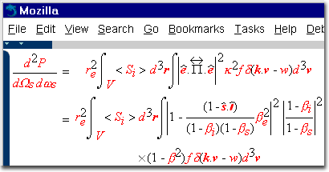
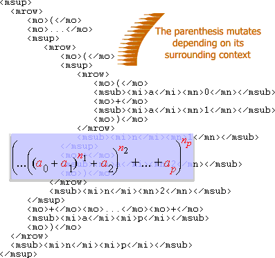

Implementation of MathML in Mozilla:
Progress Report
Roger B. Sidje <rbs@maths.uq.edu.au>
Fri Apr 14 2000
|
 Mozilla MathML v0.x rendition of the "Incoherent Thomson Scattering Theory" [ Markup ] |
- Introduction
- Flashback
- Progress in the implementation
- Taking Stock
- To Do...
Introduction
The MathML Project has been steadily progressing ever since it started in mid-May 1999, and indeed, ever since the previous status report dated September 1999.
The driving focus in the first-step of the project is to support Presentation markup, which is more general than Content markup. It should be recalled that a XSL-T processor (such as TransforMiiX which is scheduled to be directly available from within Mozilla) enables the rendering of Content markup by first transforming to Presentation markup. However, native support for Content markup is envisaged at some stage in the MathML project. This native option is primarily enabling, as it will provide authors the ability to perform dynamic/interactive math with both Presentation markup and Content markup through the DOM and JavaScript. In the meantime authors can simply transform Content markup to Presentation markup and/or use parallel markup.
Efforts of the MathML project have culminated to the point where all presentational tags are recognized, except the alignment tags <malignmark/> and <maligngroup/> --both of which happen to be unsupported by most of the existing MathML renderers. Some presentational tags need another pass to further beautify their layout, by filling such things as the italic correction and/or the amount of spacing between some tags. This finishing stylistic touch is motivated by the professionalism that authors have come to expect from sophisticated mathematical typesetting system such as TeX/LaTeX.
Also, further work remain to render <mtable> in a fully standards compliant manner, or at least at a level where its usage is pleasant when laying out common mathematical 2D constructs such as matrices, arrays, commutative diagrams. Progress in this direction will rely upon some other work in the CSS2 <table> model that Gecko implements.
Flashback
Several months have passed since the previous status report. This is a long time for many things to happen. And indeed they did. Code-wise and elsewhere.
A significant event to the MathML project came from the contribution of Shyjan Mahamud <mahamud@cs.cmu.edu> who taught TeX rendering rules to the MathML engine. All the ingredients are now in the code to further refine special cases if need be.
A MathML component was created in BugZilla, the mozilla.org's system for tracking bugs and features.
The Gecko team, which is supportive of the MathML effort and has been helpful to this writer, has seen two key members moved on. This is a good opportunity to thank them: Kipp Hickman (co-inventor of SSLv1 and v2), the "principal smart guy", and Peter Linss who pioneered the Style System. They guided the very first steps of this writer with some incisive explanations of the Gecko code. Of course, their departure means additional strain on Gecko developers in particular, and on Mozilla developers in general. This contributor is therefore appreciative of the extra efforts of current developers to accommodate the extra MathML requirements (e.g., in layout and gfx) as their schedules permit.
Other noteworthy events that have happened include an ongoing effort to release a W3C's MathML Test Suite, and the release of a draft specification for MathML 2.0. So many standards, so little time, as someone would say.
To answer a question frequently asked, the MathML component was the first Mozilla component entirely driven from outside of Netscape, with no commitment from Netscape to include the component in its next release. Those who have been following the MathML project have come to realize how picky and non-trivial MathML is. As a result, since MathML builds upon the solid foundation that Gecko provides, some people perceive that MathML provides a good testbed of the Gecko code, and, at the same time, shows how capable and extensible the Gecko architecture is. But whether MathML can formally make it in the next Netscape release is best left as hopelessly hopeful. All these show why the MathML project is unique in several aspects and is worthy of your support!
Progress in the implementation
As it is expected from a rapidly moving target such as Mozilla, there has been a great number of changes throughout Mozilla, some of which have had a direct impact on the MathML component. In particular, as a result of a work aimed at consolidating the Style System, the ReResolveStyleContext() method was removed from the nsIFrame API. The MathML engine is now using another approach to get the desired stylistic effects for scripting elements. Because this is an important aspect of MathML rendering, a separate section with in-depth technical details on this subject is provided later in this document.
The functionalities that were added to the MathML code fall into the following topics:
Fonts
- GetBoundingMetrics()
Shyjan Mahamud <mahamud@cs.cmu.edu> demonstrated that accurate text metrics could be obtained, and so was born the GetBoundingMetrics() function that was added in the nsIRenderingContext API. This is an important function used for accurate measurements of strings in order to allow precise positioning when processing MathML. It provides more information than the other functions used for HTML processing. The availability of this function has paved the way for a major enhancement of the MathML code in two areas which will be presented later: TeX rendering rules and stretchy characters. Unfortunately, because the GetBoundingMetrics() function is a low-level platform-specific function that hasn't yet been ported on all of the main platforms, printing of MathML and rendering of MathML on the MacOS are not yet working.
- The ucvmath module
Another major font hurdle was alleviated owing to the creation of the ucvmath module with the glue provided by Mozilla's Charset Converter Manager (CCM). For "symbolic" scientific fonts currently needed for MathML purposes, the CCM is used to map Unicode points to font encoding indices. The ucvmath module is the gateway from which to gradually support any useful mathematical/scientific font. Currently, it supports TeX's CMEX and CMSY, MT Extra, and the Mathematica fonts (Math1, Math2, Math3, Math4, Math5). These fonts are freely downloadable. Thus the ucvmath module gives access to a rich collection of about a thousand professionally hinted glyphs for scientific typesetting, enough for a first version of the Mozilla MathML renderer, and ready for the inclusion of the much awaited STIX project.
Rendering
- TeX Rendering Rules
Shyjan Mahamud <mahamud@cs.cmu.edu> significantly improved the visual appearance by implementing the TeX alignment rules which are documented in Appendix G of the TeXbook. Since Mozilla uses CSS frames, it was possible to apply the placements of TeX "boxes" on Mozilla CSS frames by using the accurate metrics provided by the GetBoundingMetrics() function mentioned earlier. (A CSS frame maps to a <tag>content</tag> and has nothing to do with the HTML <frame>). However, since these placements involve additional TeX specific font metrics not found in ordinary fonts, Shyjan computed approximations of these metrics. As a result of TeX rules, the rendering of the MathML engine looks much classy. With such a quality rendering governed by TeX rules, the only remaining aspect that wasn't considered during the first pass is the amount of spacing between some tags and/or the so-called italic correction, i.e., the amount of space to add after an italicized string before immediately placing a superscript (or another string in an upright style). Another pass over the code will be needed to take these into account.
- Stretchy operators
 Stretchy operators reflects the ability of some characters to "auto-grow" vertically or horizontally depending on their surrounding context. This is one of the distinctive features of mathematical typesetting. Moving from an early prototype implementation impeded by the lack of fonts, it was possible after the availability of the ucvmath module to develop a fully-fledge implementation of the nsMathMLChar class that is able to perform "glyph-searching-and-switching" within the same font or across different fonts in order to select the best glyph for a given situation. If no glyph of appropriate size is found, the nsMathMLChar class selects an appropriate set of partial glyphs and assemble them to build a character of larger size. The modular and extensible design of this process makes it possible to add support for other fonts, as need arise, by simply adding the data sets corresponding to each font.
Central to the support of stretchy characters is the GetBoundingMetrics() function together with "symbolic" fonts. Owing to Mozilla's font guru on Win32 and Linux, Erik van der Poel, who even had to redesign the Win32's font code to support the Symbol font, it has been possible to include the other fonts that are in the ucvmath module. Without the GetBoundingMetrics() function and the support for "symbolic" fonts, much would still be pending in the MathML engine.
- Embellished Operators
Embellished operators represent a special class of operators whose behavior depend on a wider context than that of normal operators.
By way of an example, consider the following fragment:<mrow> <msub> <mo>∫</mo> <mi>Ω</mi> </msub> <!-- markup to produce something really tall here --> ... </mrow>
What should happen is that the ∫ should stretch to enclose the content beyond its direct XML parent, and... Ω should remain the subscript of the stretched integral. In other words, it is as if the corresponding <msub>...</msub> is a mutable operator as a whole. In this case, the MathML REC refers to this <msub> as an "embellished operator". The definition is recursive and drills into nested tags. In MathML there is no other automatic way to make the ∫ (or other operators such as ∑) appropriatedly large unless they are treated as embellished operators. The support of embellished operators was added as a core aspect of the MathML architecture.
The snapshot of the "Incoherent Thomson Scattering Theory" given above shows embellished and stretchy operators in action.
- Other
Other works in the MathML project have included:- the support for CSS units on numeric values (like in lspace="10px", linethickness="2pt", maxsize="200%", subscriptshift="0.5em", etc);
- the implementation of more tags with support for their attributes (like <msqrt>, <mroot>, <mfenced>, <maction>, <mpadded>, etc);
- the support of the scriptminsize, i.e., is the user-desired smallest font-size. Without this, the rendering would become unreadable in hierarchies of scriptlevel contexts.
- bug fixing, etc.
Builds
MathML is not yet part of the default build in Mozilla. This has prompted some contributors to keep a watchful eye on the MathML code to ensure that it compiles successfully in the milestone tarballs, and to distribute MathML-enabled binaries. Moreover, automated nightly builds with MathML enabled can now be downloaded at:- http://www.calm.hw.ac.uk/mathml/mozilla-mathml-win32-latest.zip (for Win32)
- http://dymaxion.org/projects/mozilla/index.shtml (for Linux).
Taking Stock
Strengths
- 3S
-
Scope -
Except the unfinished
<mtable>, and the alignment tags
<malignmark/> and
<maligngroup/>,
the MathML engine supports all Presentation markup (modulo bugs!).
The use of TeX rendering rules has led to a rendering of high quality.
Furthermore, font problems that were a heavy plight on the project at the
beginning have been lifted.
The project is first concentrating on Presentation markup.
MathML is intended to be generated by software, and generators such as
TtM
and
TeX4ht
appear to be only generating Presentation markup at the moment.
In any case, the lack of current support for Content markup
doesn't stand as a severe limitation since Content
markup can be transformed to Presentation markup.
- Size - As a result of building upon the solid foundation of Gecko,
the overhead of the MathML code is proving very small (this is for the rendering part
--the editing and transformation parts are unknown).
- Speed - As fast as Gecko permits --with the caveat that the
formatting of MathML is more expensive than standard HTML by far.
This is due to the accurate measurements and fine placements that have
to be done. Moreover MathML is highly verbose and documents with lots of maths
tend to be large.
- DOM
Although MathML 2.0 has some MathML specific additions to the DOM,
MathML 1.0 doesn't mention the DOM (the DOM as we know it today
wasn't there at the time MathML 1.0 was taking shape).
Hence any capabilities with the current
Gecko's XML DOM and JavaScript are major bonuses to
the MathML engine.
- CSS
The support of CSSx in Mozilla means that authors
can use (and sadly even
misuse)
them in MathML.
- Special effects
While not part of the MathML specification, the complex Mozilla
framework offers the ability to seamlessly mix other markups within
MathML (e.g., still or animated images, XHTML/XML in general,
SVG to draw diagrams and graphs, etc).
This enables to get special effects that would otherwise be impossible.
Weaknesses
- Inline style
The inline style attribute which is part of MathML 1.0 is
missing in the current code. Furthermore, the following style-related
attributes are not supported:
fontfamily=".",
fontsize=".",
color=".".
These attributes cannot easily be supported at the
frame construction level where MathML frames are created.
And it is impossible to enumerate all the
[fontfamily="."],
[fontsize="."] and
[color="."] in the
mathml.css
file since the possibilities are endless.
 In the The Life Of An HTTP Request,
Alexander Larsson <alex@cendio.se> illustrated how data are fetched from
the network and ultimately displayed on the screen.
The formatting presently involved in the MathML code is
hooked at the frame construction level. Handling the
inline style properties (such as fontfamily, fontsize, color)
at that level is a problem because the Style System has already
sorted and combined style rules into subsets (or nsIStyleContext)
relevant to each content node in the
content model
(a raw form of the DOM).
Every frame is bound to a nsIStyleContext which defines the stylistic
characteristics of that frame. In addition, the Style System enables a
frame to possibly hold additional leaf style contexts because they are
useful in certain circumstances.
In the The Life Of An HTTP Request,
Alexander Larsson <alex@cendio.se> illustrated how data are fetched from
the network and ultimately displayed on the screen.
The formatting presently involved in the MathML code is
hooked at the frame construction level. Handling the
inline style properties (such as fontfamily, fontsize, color)
at that level is a problem because the Style System has already
sorted and combined style rules into subsets (or nsIStyleContext)
relevant to each content node in the
content model
(a raw form of the DOM).
Every frame is bound to a nsIStyleContext which defines the stylistic
characteristics of that frame. In addition, the Style System enables a
frame to possibly hold additional leaf style contexts because they are
useful in certain circumstances.
The nsIStyleContext provides an interface for accessing the actual
resolved style data in a suitable format throughout the code (nsStyleStruct).
When there is a style property at the frame construction
level that wasn't accounted for during the style resolution
process, it is a problem because if a style data is altered,
that would mean invalidating all the sorting that the style
processor has done (and this without its knowledge), thereby
corrupting the style tree.
Another important task performed by the Style System is
dynamic update. For example, if DOM + JavaScript
manipulate style rules, the Style System will determines where
the changes apply, resets (or replaces) style contexts
that use those rules, rebuilds the style data, figures
out the nature of the style changes (frame change, reflow,
or visual --like color that doesn't require reformatting)
and then initiates the appropriate changes.
If is therefore better to add those style rules
that are particular to MathML at the bottom in order
to benefit from all this. The Gecko team plans to factor
the content code and the frame construction code
to allow greater extensibility in these areas.
This is something that will certainly benefit the MathML
and SVG efforts. If MathML style properties are supported
at the bottom, the Style System will take care of them as
it does with other properties. Moreover, this will allow
for a better handling of the unconventional style
switching induced by the
<mi> tag and the
scriptlevel attribute.
Having described all this, it is important to draw authors'
attention on the fact that Mozilla enables to achieve the desired
stylistic effects (for fontsize, fontfamily, color, and much more)
with standard CSS declarations (rather than attributes).
Hence albeit inconvenient, this current limitation is not
critical and can be circumvented.
- <math> in HTML documents
Mozilla MathML is rendered via XML/XHTML documents.
But since most math authors are more familiar with HTML than XML/XHTML
and are using generators that produce HTML documents,
one of the most requested features
at the moment is the ability to directly have a
<math>...</math>
fragment inside a HTML document. This means a XML fragment within a HTML document.
Mozilla does not yet support the cohabitation of XML and HTML within the
same document.
- Platform parity
The fact that the
GetBoundingMetrics()
function hasn't yet been ported on all of the main platforms
means that printing of MathML and rendering of MathML
on the MacOS are not yet working.
To Do...
- <mtable> - Of course.
- Platform parity - Port the
GetBoundingMetrics()
on gfx/postscript (for printing) and on other platforms such as the MacOS.
- Temp. hacks - Fix (or invalidate) the XXX comments. Ensure
that incremental reflows are honored.
- Save As Text - What does this means for MathML?
Plain text... or better: ascii-art for the creative minds...
- Save As TeX -
Want to dive in the Mozilla code with the prospect of learning,
and a clear focus to come up with something useful?
- Content markup - Want to make MathML the first internal
Mozilla application that feeds on
TransforMiiX?
- Linebreaking - Teach <mrow> to
shrink-wrap around its content.
- Embed the MathML renderer - The MathML code is not designed to be
a standalone component of large size. On the contrary, it aims at fitting
the Gecko architecture and at making an efficient use of the Gecko code.
Thus it cannot be used in a separate library outside Gecko. However, on Win32,
it is possible to embed Gecko in other applications via the
Mozilla ActiveX control.
Practical applications of embedded Gecko with MathML enabled would be most welcome.
- Surrogates (UTF-16) - MathML 2.0 involves plane 1 characters
that are not yet supported by Mozilla, and David Carlisle noted that they
break James Clark's sp suite of SGML tools, including the nsgmls parser system
that is sitting behind most validation tools.
- XML (<math>) in HTML documents -
That would make many happy faces.
- Editor aspect - Want to start authoring MathML in the
editor?
- Much more - As usual...
-
Scope -
Except the unfinished
<mtable>, and the alignment tags
<malignmark/> and
<maligngroup/>,
the MathML engine supports all Presentation markup (modulo bugs!).
The use of TeX rendering rules has led to a rendering of high quality.
Furthermore, font problems that were a heavy plight on the project at the
beginning have been lifted.
The project is first concentrating on Presentation markup. MathML is intended to be generated by software, and generators such as TtM and TeX4ht appear to be only generating Presentation markup at the moment. In any case, the lack of current support for Content markup doesn't stand as a severe limitation since Content markup can be transformed to Presentation markup.
- Size - As a result of building upon the solid foundation of Gecko,
the overhead of the MathML code is proving very small (this is for the rendering part
--the editing and transformation parts are unknown).
- Speed - As fast as Gecko permits --with the caveat that the
formatting of MathML is more expensive than standard HTML by far.
This is due to the accurate measurements and fine placements that have
to be done. Moreover MathML is highly verbose and documents with lots of maths
tend to be large.
Although MathML 2.0 has some MathML specific additions to the DOM, MathML 1.0 doesn't mention the DOM (the DOM as we know it today wasn't there at the time MathML 1.0 was taking shape). Hence any capabilities with the current Gecko's XML DOM and JavaScript are major bonuses to the MathML engine.
The support of CSSx in Mozilla means that authors can use (and sadly even misuse) them in MathML.
While not part of the MathML specification, the complex Mozilla framework offers the ability to seamlessly mix other markups within MathML (e.g., still or animated images, XHTML/XML in general, SVG to draw diagrams and graphs, etc). This enables to get special effects that would otherwise be impossible.
The inline style attribute which is part of MathML 1.0 is missing in the current code. Furthermore, the following style-related attributes are not supported: fontfamily=".", fontsize=".", color=".". These attributes cannot easily be supported at the frame construction level where MathML frames are created. And it is impossible to enumerate all the [fontfamily="."], [fontsize="."] and [color="."] in the mathml.css file since the possibilities are endless.
In the The Life Of An HTTP Request,
Alexander Larsson <alex@cendio.se> illustrated how data are fetched from
the network and ultimately displayed on the screen.
The formatting presently involved in the MathML code is
hooked at the frame construction level. Handling the
inline style properties (such as fontfamily, fontsize, color)
at that level is a problem because the Style System has already
sorted and combined style rules into subsets (or nsIStyleContext)
relevant to each content node in the
content model
(a raw form of the DOM).
Every frame is bound to a nsIStyleContext which defines the stylistic
characteristics of that frame. In addition, the Style System enables a
frame to possibly hold additional leaf style contexts because they are
useful in certain circumstances.
The nsIStyleContext provides an interface for accessing the actual resolved style data in a suitable format throughout the code (nsStyleStruct). When there is a style property at the frame construction level that wasn't accounted for during the style resolution process, it is a problem because if a style data is altered, that would mean invalidating all the sorting that the style processor has done (and this without its knowledge), thereby corrupting the style tree.
Another important task performed by the Style System is dynamic update. For example, if DOM + JavaScript manipulate style rules, the Style System will determines where the changes apply, resets (or replaces) style contexts that use those rules, rebuilds the style data, figures out the nature of the style changes (frame change, reflow, or visual --like color that doesn't require reformatting) and then initiates the appropriate changes.
If is therefore better to add those style rules that are particular to MathML at the bottom in order to benefit from all this. The Gecko team plans to factor the content code and the frame construction code to allow greater extensibility in these areas. This is something that will certainly benefit the MathML and SVG efforts. If MathML style properties are supported at the bottom, the Style System will take care of them as it does with other properties. Moreover, this will allow for a better handling of the unconventional style switching induced by the <mi> tag and the scriptlevel attribute.
Having described all this, it is important to draw authors' attention on the fact that Mozilla enables to achieve the desired stylistic effects (for fontsize, fontfamily, color, and much more) with standard CSS declarations (rather than attributes). Hence albeit inconvenient, this current limitation is not critical and can be circumvented.Mozilla MathML is rendered via XML/XHTML documents. But since most math authors are more familiar with HTML than XML/XHTML and are using generators that produce HTML documents, one of the most requested features at the moment is the ability to directly have a <math>...</math> fragment inside a HTML document. This means a XML fragment within a HTML document. Mozilla does not yet support the cohabitation of XML and HTML within the same document.
The fact that the GetBoundingMetrics() function hasn't yet been ported on all of the main platforms means that printing of MathML and rendering of MathML on the MacOS are not yet working.